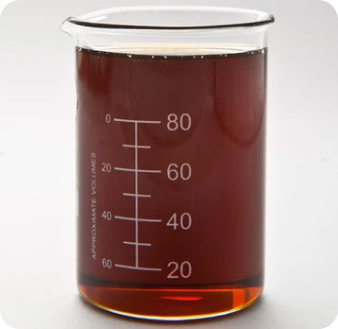
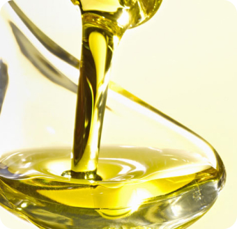
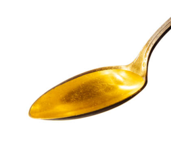
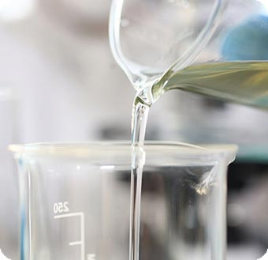
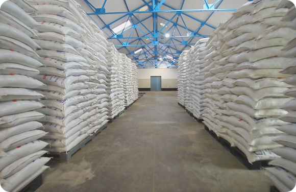
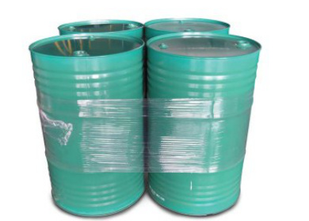
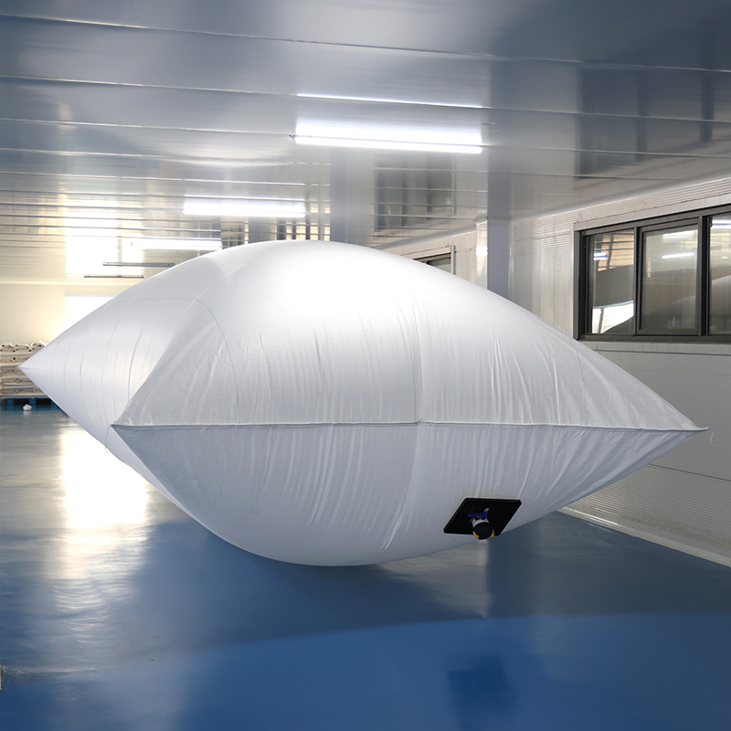

Marine protein
Steam Dried Fish Meal
A concentrated marine protein ingredient for aquaculture and animal-feed formulations.
Explore our proteins, oils and specialty products. Talk to us about the right grade, specification and packaging for your requirements.
A concentrated marine protein ingredient for aquaculture and animal-feed formulations.

Crude sardine fish oil for feed formulations and further processing.

Processed fish oil for customers requiring a refined marine lipid ingredient.

A concentrated source of soluble proteins and amino acids for feed and agricultural applications.

A specialty fish-oil derivative for industrial applications.

A marine oil ingredient for application-specific formulations.
Marine lipids for formulations that require omega-3 fatty acids.

A specialty ingredient for formulation and further processing.
Specifications, grades, packaging and availability are confirmed at enquiry. Product imagery is illustrative and supplied from our sister concern’s catalogue.
Discuss the right format for your ingredient, volume and destination.

Bagged formats for fish meal. Confirm bag weight, lining, labelling and pallet requirements.

Discuss container options suited to your oil grade and handling requirements.

Confirm product compatibility, loading quantity and transport arrangements for larger shipments.
Industry reference images. Packaging formats and capacities are confirmed by Bristol for each enquiry.
For a focused product discussion, share the ingredient, intended application, target specification, quantity and delivery destination.
Prepare a product enquiry